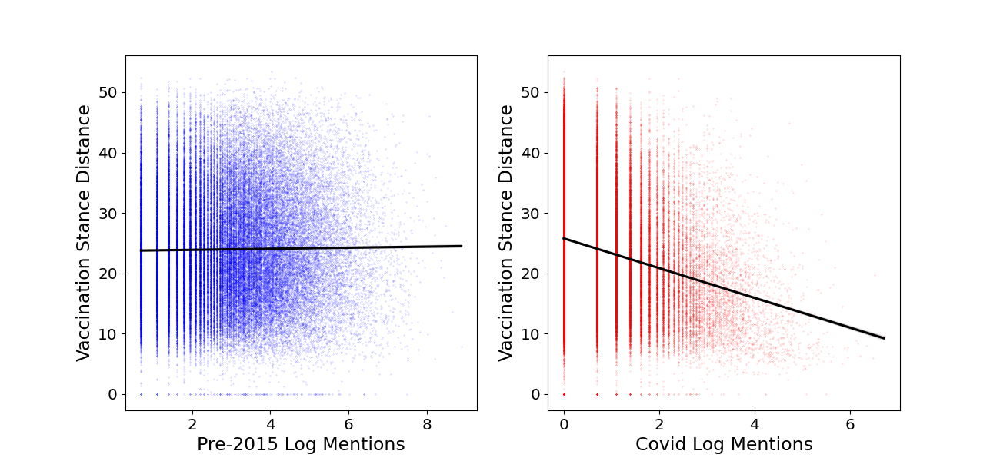

I am an incoming PhD student at the MIT Sloan School of Management, advised by Professors David Rand, Gordan Pennycook, and Thomas Costello.
I study mechanisms of persuasion and belief formation through computational and experimental methods. My broad interests lie in Computational Social Science and Machine Learning.
Before MIT, I completed my master's at Carnegie Mellon University and my undergraduate degree in Computer Engineering at the University of Toronto.
Selected Publications

The Life of a Tie: Social Origins of Network Diversity
Published in 2024 International Conference on Social Computing, Behavioral-Cultural Modeling and Prediction and Behavior Representation in Modeling and Simulation
PhysarumSM: P2P Service Discovery and Allocation in Dynamic Edge Networks
Published in 2021 IFIP/IEEE International Symposium on Integrated Network Management (IM)